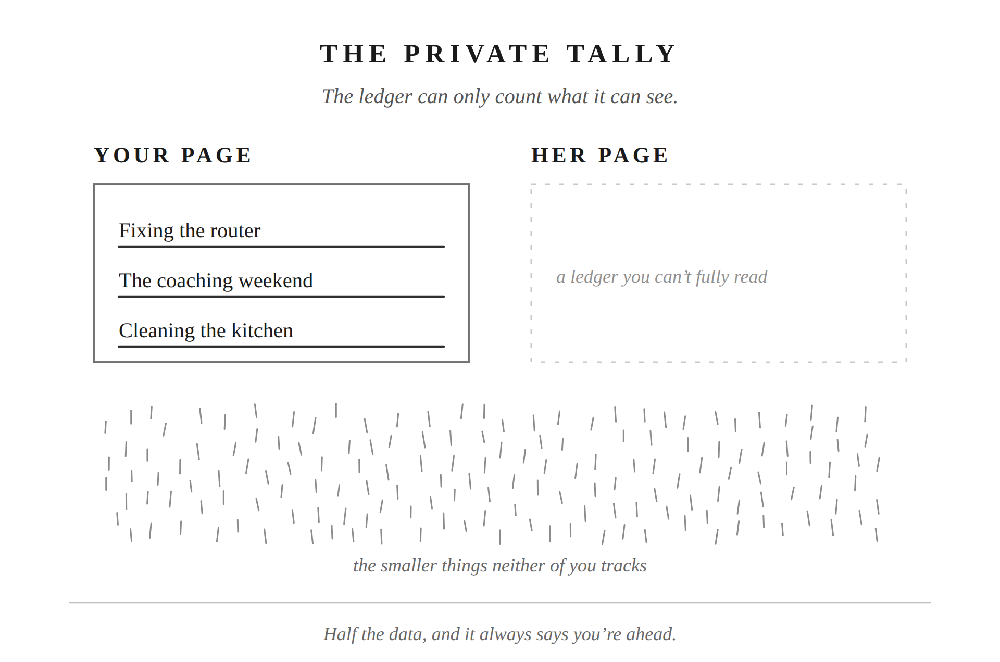

Somewhere inside you, there’s a running total. You didn’t sit down and decide to keep it. You just know where you stand.
The internet goes down on a Tuesday night, mid-show, and you’re the one who gets up. You reset the router, check the cables, call the provider, wait on hold, get it working again. Nobody asks you to do this. It’s just yours, like the ceiling fan that started clicking last month. Like the TV that needed a new setting after the last software update. You know your way around the house’s machinery. So it falls to you, quietly, the way certain jobs always fall to the person who can do them. A few weeks before that, you spent an entire weekend at a tournament three hours away, coaching your kid’s team. Managing snacks and rides and a hotel room. She stayed home and ran the rest of life without you. Both of those are real. Both of those took something out of you. And if anyone ever asked you to make the case for how much you give this marriage, those are the two stories you’d tell. They’re the ones with a beginning, an end, and a name.
The dozens of smaller things neither of you tracks, on either side, wouldn’t make your list. The question you didn’t ask because you already knew the answer would start something. The five minutes spent finding her keys. Noticing she hadn’t eaten and not saying anything about it, just handing her a plate. None of those would register if someone asked you to defend yourself. They’re too small, too constant, too easy to forget you even did them. And that’s exactly the problem this chapter is about.
Marriages keep score on more than who did the dishes. Some couples tally whose income or whose caretaking counts as the real contribution. Some tally who sacrificed more: a birth, a career, a move. Some tally who’s better at what, who’s been hurt worse, who tries harder in the relationship. Different currencies, same instinct: somewhere inside you, a running total exists, and you didn’t sit down and decide to keep it. You just know where you stand, the way you know your bank balance without checking it. This chapter goes deep on one version of that instinct, the oldest and most common one, the one about labor. Once you can see why it fails, you’ll recognize the same failure wherever else you’re running a private count.
Picture a jar filled with rocks. A few big ones go in first: the visible contributions with a clear edge and a story attached. Fixing the router. The coaching weekend. The day you took off work for the family. Those are real, and they matter. But they don’t fill the jar. What fills most of the space is sand: hundreds of small acts done without tracking them, poured in beneath and around and on top. They make up the majority of what’s actually there. The big contributions are countable, memorable, citable in an argument. The small ones are everything else, and there’s far more of them.
This is why the math never works when either of you tries to do it. You can list the things you did. She can list hers. Neither of you can list the countless small ones. They’re made of things too small to register while you’re doing them, for either of you, including the person doing them. Any tally you keep is built entirely out of the visible things, the smallest fraction of what’s actually happening, and mistaken for the whole.
My grandfather had a piece of marriage advice he gave me once, and I’ve never forgotten it: give 60 percent, expect 40 percent. Not 50-50. Sixty-forty. He wasn’t doing arithmetic. He was naming the only posture that survives a total neither of you can fully see. If you’re only willing to give what you expect back in equal measure, you’ll spend your marriage chasing a balance. That balance was never visible to begin with. You can only count what you remember, and what you remember was never the whole picture.
There’s a researcher named Karl Pillemer who spent years interviewing people who’d been married more than four decades, asking what actually worked. Almost none of them talked about splitting things evenly. The phrase that kept coming up instead was some version of “give more than you get.” That’s not folklore. It’s the pattern that shows up when long marriages describe themselves looking backward. A separate, much larger study, thirteen years of data on more than 7,000 couples, found something that points in the same direction. People who kept close track of what they were owed, expecting their giving to be matched back, saw their satisfaction erode over time. Most couples loosen that expectation naturally as the relationship deepens. The ones who don’t tend to drift.
To be fair, none of that means the imbalance you feel is imaginary. Sometimes one person really is carrying more, and that’s worth naming. What it does mean is that the running tally in your head isn’t a reliable way to find out whether that’s true. It can only show you the smallest, most visible slice of the work, and it will tell you that you’re ahead. Your own invisible contributions are just as invisible to you as hers are to her. Figuring out whether an imbalance is real takes a different kind of looking: an honest, deliberate accounting rather than a private one. That’s the next chapter’s work. This one is about why the private tally can’t do it.
The Stoics built their whole philosophy on one sorting question: is this mine to control, or isn’t it? Her effort isn’t yours to control. Her noticing isn’t yours to control. What you give, and how you give it: that’s the only column with your name on it.
That’s not resignation. It doesn’t mean you can’t name an unfairness or ask for something different. It means the private tally was never the right tool for finding a real imbalance. A tally that can only read your own side, built from contributions you happened to notice and remember, will tell you you’re ahead every time. It’s not evidence. It’s arithmetic done on one page of a two-page ledger.
You can ask for what you need. You can have the conversation about what’s unfair. But the private count of who’s ahead was never yours to settle alone, because it was never just your column to keep.
Seneca wrote at length in De Beneficiis, his work on the philosophy of giving and receiving. Why does the recipient always underestimate what they’ve been given? His argument: you can never fully see everything that went into what someone gave you. Flip that around: when you receive what she gives, you’re seeing the finished thing and missing everything that produced it. Gratitude for more than you can see is the only honest response to a ledger you can’t fully read.
Marcus Aurelius put it plainly: when you’ve done something good, why look for credit beyond the act, or wait to see what comes back? There’s the doing, and there’s the need it met. That’s the whole list. Don’t reach for the third thing.
Try this sometime when you’re turning over a feeling of unfairness, the kind that shows up quietly, days later, while you’re driving or half-listening to something else. Instead of running your own tally again, try running hers. Not the dramatic version. Go small. What did she carry today that you didn’t see her carry? What did she notice so you didn’t have to? What question did she not ask, the same way you didn’t ask yours?
You’ll find you can’t finish the list. That’s not a failure of memory. It’s the same invisible weight, her side of it, just as hard to count as yours is. The point isn’t to win at reconstructing her side better than she could win at reconstructing yours. The point is to feel, for a minute, how much of what she gives was never going to make it onto anyone’s list, including her own.
Give 60 percent, expect 40: not because the math is fair, but because no math was ever going to find the bottom of that jar.

Putting into Practice
Mechanism: The Private Tally
Conversation sentence: The ledger you keep in your head can only count the visible things, so it was always going to tell you that you’re ahead.
Most husbands run a private tally of who’s given more, but the tally is built entirely from contributions big enough to remember: the smallest fraction of what’s actually there. The Stoic answer: stay in your own column, give more than you expect back, and practice gratitude for what you can’t count.
Lesson: The Stoics built their ethics on one question: is this mine to control, or isn’t it? Applied here, the only column with your name on it is what you give and how you give it. Not what you’re owed back for it.
Challenge: Believing you’re keeping an honest tally of who’s given more, when that tally only ever had access to half the data: your side, not hers.